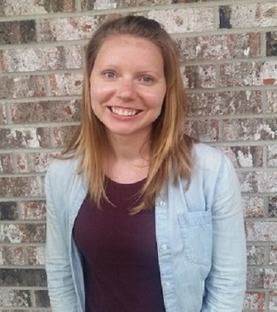

I love learning. Knowledge excites me. I live to hear new stories and meet new people. That's why I decided on a career in libray science. I am currently working on my Master's in Library and Information Science from Wayne State University. I expect to finish my degree in December of 2019. In the meantime, I am working as a teen librarian and curriculation assistant at a small public library near Madison, WI. I have jumped headlong into the library science field and am loving every second of it!
